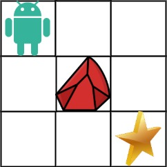
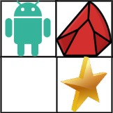

| Category | Difficulty | Likes | Dislikes |
|---|---|---|---|
| Algorithms | Medium | 9538 | 555 |
bloomberg | google | amazon | nvidia | facebook | tiktok | agoda | microsoft | pinterest | coupang | tcs
You are given an m x n integer array grid. There is a robot initially located at the top-left corner (i.e., grid[0][0]). The robot tries to move to the bottom-right corner (i.e., grid[m - 1][n - 1]). The robot can only move either down or right at any point in time.
An obstacle and space are marked as 1 or 0 respectively in grid. A path that the robot takes cannot include any square that is an obstacle.
Return the number of possible unique paths that the robot can take to reach the bottom-right corner.
The testcases are generated so that the answer will be less than or equal to 2 * 109.
Example 1:

Input: obstacleGrid = [[0,0,0],[0,1,0],[0,0,0]]
Output: 2
Explanation: There is one obstacle in the middle of the 3x3 grid above.
There are two ways to reach the bottom-right corner:
1. Right -> Right -> Down -> Down
2. Down -> Down -> Right -> RightExample 2:

Input: obstacleGrid = [[0,1],[0,0]]
Output: 1
Constraints:
m == obstacleGrid.lengthn == obstacleGrid[i].length1 <= m, n <= 100obstacleGrid[i][j] is 0 or 1.